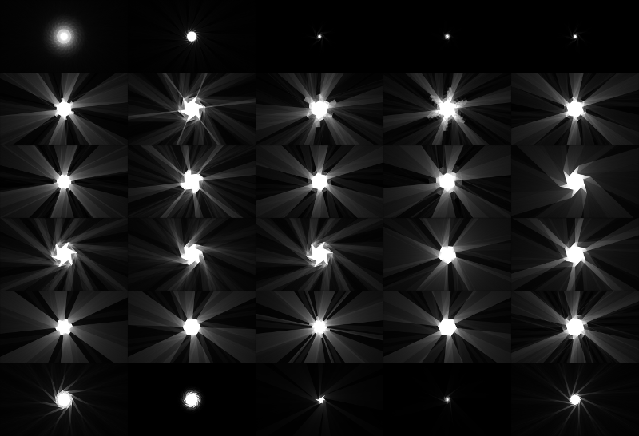

Photon Ray Tracing
A few months ago I saw @scanlime's "Zen Photon Garden" on hacker news, and was really impressed. In short, you draw walls/mirrors with your mouse, and it ray-traces light from a central source. Very beautiful and "zen". However, as a programmer, drawing lines by hand was far too inaccurate. So I forked it and added a scriptable interface for adding walls.
Here are some of the designs I came up with:

But don't take my word for it; play with it yourself.
And here's a screenshot of the full UI

Things I still want to do
- clean up the UI a bit more
- use Ace editor instead of a textarea for the code
- allow you to reference github gists for the code & config
- the config sliders don't reload when you change the json
- I'd actually like to dump coffeescript, maybe rewrite the thing in React